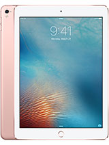
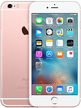
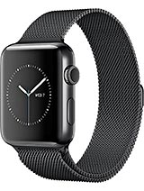

Những sản phẩm bán chạy nhất của Apple
Iphone 7 Plus
Iphone 7

Ipad Pro 9.7
Iphone SE

Iphone 6s Plus
Iphone 6s
Ipad Pro
Ipad Mini 4
Apple Watch

Apple Watch Black
 Iphone 7 Plus
Iphone 7 Plus
 Iphone 7
Iphone 7
 Iphone SE
Iphone SE Iphone 6s
Iphone 6s
 Ipad Mini 4
Ipad Mini 4